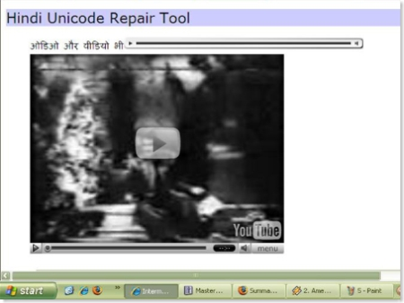
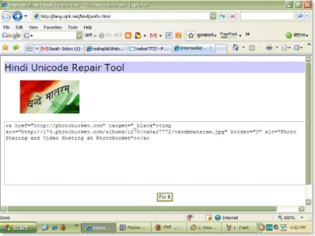
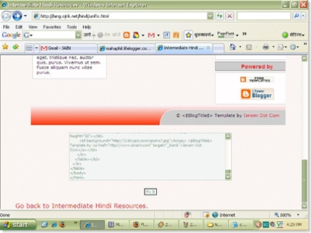
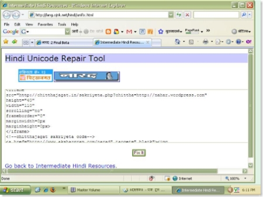
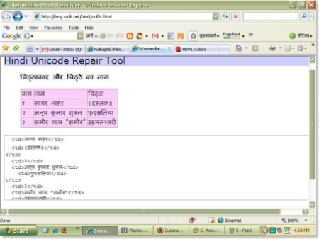

एक दिन में सुरत में बाढ़ पर पोस्ट लिख रहा था और फोटो को फोटो बकेट पर लोड किया और यूं ही मजे के लिये फोटो बकेट से मिले कोड को हिन्दी रिपेयर टूल में पेस्ट कर फिक्स इट पर क्लिक किया तो वह फोटो दिखने लगा जिसको मैने फोटो बकेट पर लगाया था। मुझे बड़ा मजा आया और उसके बाद मैने अलग अलग तरीकों से इस पर कुछ प्रयोग किये जिसमें में सफल रहा।
वे प्रयोग क्या क्या थे आप को तस्वीरों के माध्यम से बताता हूँ।
ओडियो और वीडियो ( यू ट्यूब , इस्निप और लाईफ लॉगर) के कोड लगाने पर उसे रिपेयर टूल में ही देखा जा सका और गाने सुने जाने लगे)

फोटो बकेट से या फ्लिकर से प्राप्त कोड का परिणाम ।

ब्लॉगर के टेम्पलेट और थीम का परीक्षण।

तरह तरह के बटन

HTML कोड का परीक्षण भी किया।

शायद इस तरह के और भी इस टूल के उपयोग होंगे, अगर आपको पता हो तो बतायें।
Hindi Blog Aggregator (original image)
title="नई प्रविष्टियाँ सूचक">Image unavailable in this archive (original image) width="125" height="30">
Technorati tags: हिन्दी यूनिकोड रिपेयर टूल, HIndi Unicode Repair Tool